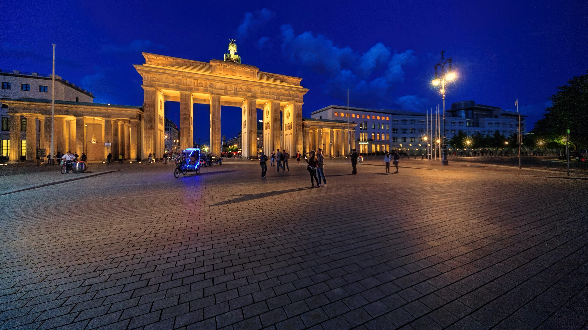

|
HOME | ABOUT | DESTINATION | CONTACT US |
|---|
Nymphenburg PalaceSituated in the northwest outskirts of the city, the palace was initially the summer residence of the Wittelsbach Electors. The vast palace extends more than 600 meters from one wing to the other, reuniting the entire building in a pool. The magnificent palace is largely vouched for its beauty, furnishings, ceiling paintings, state coaches collections, and more. üëàÔ∏èCLICK THE IMAGE FOR MORE DETAILS |
|
|---|---|
Rhine ValleyDo you know you can explore some of the world‚Äôs most winsome places in Germany? And to that, The Rhine Valley is one of the popular places in Germany to which you can book a trip of a lifetime. It's totally a unique place with an incredible number of sights to see. Starting from the breathtaking castles, historic towns, mesmerizing mountains, and vineyards, nothing can beat the charismatic beauty of this place. Here you will get opportunities for hiking and cycling along long-distance trails, and bike routes. CLICK THE IMAGE FOR MORE DETAILSüëâÔ∏è |
 |
 |
Berlin Wall MemorialConstructed in 1961, to prevent the people of East Germany from fleeing towards West Germany, this 4-meter high wall separated 155 roads. Today, this wall stands as a memorial to the countless men, women and children who died while crossing the wall at that time. Lauded as one of the finest places in Germany, this Berlin wall is located at the corner of the Ackerstr End of Bernauer Strasse. The Berlin Wall Memorial is locally famous as ‚ÄòGedenkst Berlin Berliner‚Äô. üëàÔ∏èCLICK THE IMAGE FOR MORE DETAILS |
Museum IslandThe museum island, designed by architect Karl Friedrich Schinkel is situated between the Spree River and Kupfergraben in a 400-meter long canal is a UNESCO World Heritage Site and one of the most prominent places in Germany. The Museum Island was inaugurated in 1830 and is named Museum Island because it is a complex of five prestigious museums - the Altes Museum, the Neues Museum, the Alte Nationalgalerie, the Bode-Museum, and the Pergamonmuseum and includes archaeological and art collections. CLICK THE IMAGE FOR MORE DETAILSüëâÔ∏è |
 |
|  | Brandenburg GateDating back to the 18th century, this monument is one of the most visited places in Germany. Prussian king Frederick William II built this gate in Berlin in a neoclassical style and today, it stands as a symbol of Berlin and German division during the Cold War. The gate is 26 meters high and the beautiful Quadriga statue designed by Johann Gottfried Schadow crowns the wall at the top. üëàÔ∏èCLICK THE IMAGE FOR MORE DETAILS |